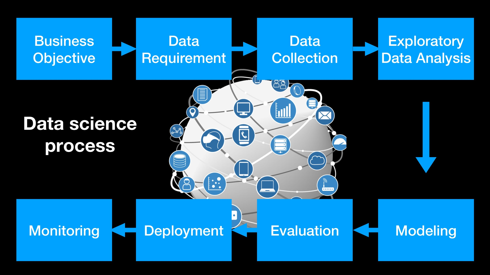

Introduction to Data Science
Data science involves extracting knowledge and insights from structured and unstructured data using various techniques from statistics, machine learning, and computer science.
Programming for Data Science
Python and R are widely used for data science. Python is known for its readability and extensive libraries, while R is preferred for statistical analysis and visualization.
Python Example:
import pandas as pd
data = pd.read_csv('data.csv')
print(data.head())R Example:
data <- read.csv('data.csv')
head(data)Statistics and Probability
Descriptive and inferential statistics are essential for understanding data distributions and making predictions based on data samples.

Data Visualization
Effective visualizations convey information clearly and efficiently, using appropriate chart types and design principles.

Machine Learning Basics
Supervised learning involves labeled data, while unsupervised learning deals with unlabeled data. Common algorithms include linear regression, logistic regression, decision trees, and clustering.

Data Wrangling and Cleaning
Handling missing data, transforming and normalizing data, and dealing with outliers are crucial steps in data preparation.

Big Data Technologies
Big data involves large, complex datasets that require advanced tools and techniques to process, such as Hadoop and Spark.

Data Ethics and Privacy
Ethical considerations include data privacy, bias, and fairness in algorithms. Data scientists must comply with laws like GDPR and CCPA.